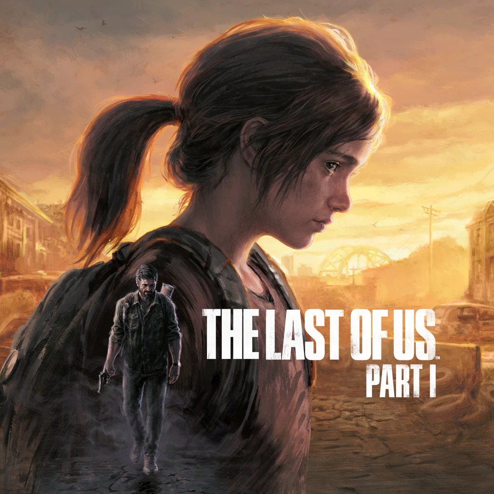

PART IThe Last of Us Part I
The Last of Us foi lançado originalmente em 2013 e apresentou ao público um mundo pós-apocalíptico no qual a humanidade tenta sobreviver depois de uma pandemia devastadora. A história acompanha Joel Miller, um homem marcado por uma grande perda, e Ellie Williams, uma jovem que pode possuir uma característica capaz de mudar o futuro da humanidade.
Joel recebe a missão de levar Ellie até um grupo conhecido como Vaga-lumes. O que inicialmente parece ser apenas uma tarefa começa a se transformar em uma relação muito mais profunda entre os dois. Durante a viagem, eles atravessam diferentes regiões, cidades abandonadas e locais dominados pelos infectados.
Ao longo do caminho, Joel e Ellie precisam lidar com grupos de sobreviventes, perigos ambientais, falta de recursos e situações que colocam sua confiança em risco. Cada acontecimento contribui para mudar a maneira como os dois enxergam um ao outro.
O primeiro jogo ficou conhecido principalmente pela força de sua narrativa e pela relação entre seus protagonistas. A jornada mostra como uma pessoa pode mudar completamente quando encontra alguém por quem está disposta a lutar.